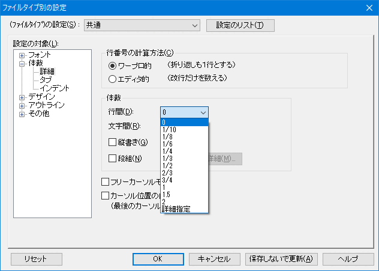

[HME0059A]
●行と行の間隔を変えたい

- 画面表示での行間の調整はできないのでしょうか？ 表示容量の制約からだと思いますが、多くのソフトではとかく行間を詰めて表示する傾向があるようです。行間が狭い場合には、表示された文章を読みとること自体に努力を要し、編集作業や書かれた内容の理解に集中できなくなります。秀丸エディタで行間を自由に調整できると助かります。

-
可能です。メニューの「その他」→「ファイルタイプ別の設定」→「体裁」→「詳細」を選択し、「行間」のリストボックスから、行間を選んでください。
Ver.8.81以降は、設定に「詳細指定」が追加され、1/100行単位で設定可能です。